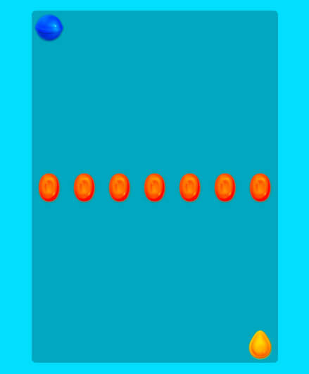

Pour cet exercice, vous devrez recréer des mises en page inspirées du jeux Candy Crush en mettant à profit vos connaissances sur la propriété CSS background.
Médias
Le HTML et le CSS de base est fournis dans le Pen de départ. Pour chaque mise en page à réaliser, vous devrez:
- Faire un fork du Pen de départ afin de repartir du début à chaque fois.
- Nommer chacune des copies en fonction de l'étape actuelle. Par exemple, pour l'étape 1, nommer votre pen: Candy Crush - Étape 1.
- Pour chaque étape, configurer la propriétés de background de l'élément .game afin de reproduire la mise en page fournie en capture d'écran.
- En tout temps, les bonbons doivent avoir une dimension de 50x50px.
 Étape 2
Étape 2 Étape 3
Étape 3 Étape 4
Étape 4 Étape 5
Étape 5 Étape 6
Étape 6Étape 7
 Étape 8
Étape 9
Étape 10
Attention de faire en sorte de respecter la dimension et la position de l'image de fond. Fiez-vous à la position du bateau dans l'image.
Background
color, image, gradient